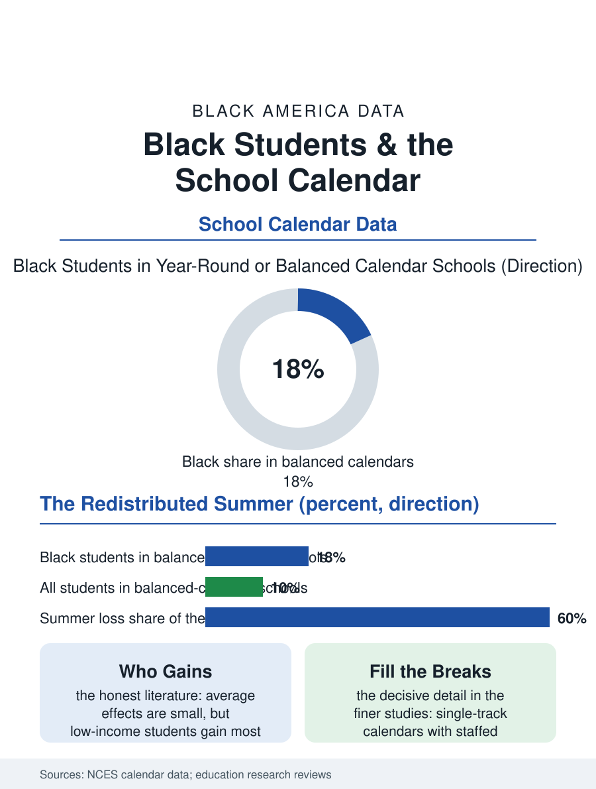

Black Education
The Redistributed Summer: Black Students and the School Calendar
Balanced calendars concentrate in the urban districts Black students attend, carrying modest average effects and the strongest equity rationale in the time file. The calendar file.

The American school calendar is an agricultural artifact, a long summer break designed for a farm economy that no longer employs the children it releases. Districts that have adopted year-round or balanced calendars, shorter summers, breaks redistributed, enroll a distinctive slice of American students, and Black students are overrepresented in them, concentrated in the large urban districts that adopted the calendar for capacity and learning reasons alike. This article reads the calendar file.
Why Districts Change the Year
The calendar's history in the data has two distinct chapters. The first is capacity: the multi-track year-round schools of the growth-belt suburbs and cities, where staggered tracks let one building serve a third more students, adopted the schedule as real estate policy, and its students were whoever the growth housed. The second chapter is the balanced calendar as learning policy, adopted by districts, many of them urban and heavily Black, on the summer learning evidence recorded in this atlas's summer loss file: the break is when the achievement gap grows, low-income students losing ground their affluent peers hold or gain, so redistributing the break redistributes the loss. The intersessions, the break weeks within the year, become the policy's active ingredient when districts fill them with the enrichment and remediation programming the calendar makes schedulable, camps, credit recovery, and the arts the regular year squeezes. The federal and state data on calendar types show adoption concentrated in the Southeast and the urban West, a geography that overlaps the Black population map closely enough that the calendar question and the race question in the survey data are partially the same question.
What the Evidence Actually Shows
The research literature on year-round schooling is one of education's most honestly mixed files, and the file reports it as such. The average achievement effect of the balanced calendar alone is small in the meta-analyses, near zero in some, modestly positive in others, with the consistent bright spot exactly where the theory predicts: low-income students and students at risk of summer loss gain most, the calendar functioning as a redistribution of learning time toward the children the summer taxes. The single-track versus multi-track distinction proves decisive in the finer studies: multi-track capacity calendars, where students rotate through breaks without intersession programming, show the weakest results, while single-track balanced calendars with staffed intersessions show the strongest, which converts the policy question from the calendar's shape to the breaks' content. The family economics in the survey data cut both ways and are racially patterned: working parents, Black mothers foremost in the workforce data, gain from the shorter summer's reduced childcare scramble, the twelve-week coverage problem that the summer file prices, while losing the long summer's own institutions, the grandmother months in the South that the migration and family files describe as childcare infrastructure of the first order, the camp and program economy, and the teen summer job, whose earnings the household file counts.
The Calendar's Quiet Constituency
The politics of adoption explain the calendar's distribution as fully as the evidence does. Suburban districts with the most parental political capital have largely kept the traditional calendar, defending the summer as lifestyle infrastructure, the camp, the vacation, the teen job market their own children win, while the urban districts serving Black majorities adopted the balanced year with the same parents' preferences weighed against the summer loss data and the childcare arithmetic of hourly work. The result is another of this atlas's inversions: the reform with the modest average effect and the strong equity rationale is concentrated in the districts with the least political power to refuse experiments, for better and worse at once, since the same districts also received the calendar's genuine benefits first. Teacher labor markets register their own vote, with calendar type appearing in the transfer and vacancy data as teachers sort toward the schedules their lives prefer. The calendar file closes with the school year's first day, which in the balanced districts arrives in late July, in the heat the building's systems strain against, to classrooms whose students have been out of school for five weeks instead of twelve. The experiment's data will keep accumulating in the achievement files. The file's own judgment is the literature's: the calendar is a container, and like every container in this atlas, what it holds, staffed intersessions or empty weeks, decides what it is worth, for the Black students whose summers it rearranged.
More in Black Education
Black Educational Attainment: High School Parity, the College Gap
About 89 percent of Black adults hold a high school diploma and one in four holds a bachelor's degree or higher — the attainment ladder, the college completion gap, and the generational trend.
Historically Black Colleges and Universities: Enrollment and Degrees
More than 100 HBCUs enroll roughly 290,000 students and award about one in six Black bachelor's degrees — an outsized share from a small sector. The federal education data.
Black College Enrollment: 2.4 Million Students
About 2.4 million Black students are enrolled in American colleges — nearly two-thirds of them women. The NCES enrollment data by sector, level, and trend.
Source: National Center for Education Statistics school calendar data; research reviews of year-round and balanced calendar achievement effects.